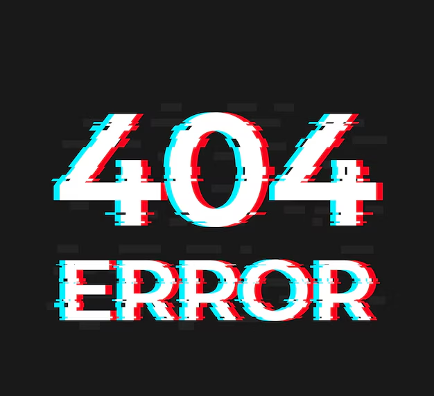

Page non trouvée (Erreur 404)
Cette page n'existe pas dans notre simulation réseau. CDS25 Network Simulation est un projet fictif développé dans le cadre de la SAé21 du BUT Réseaux & Télécommunications.
Retour à l'accueilNote pédagogique : Cette erreur 404 simulée fait partie de l'évaluation des compétences en déploiement web pour le projet SAé21.